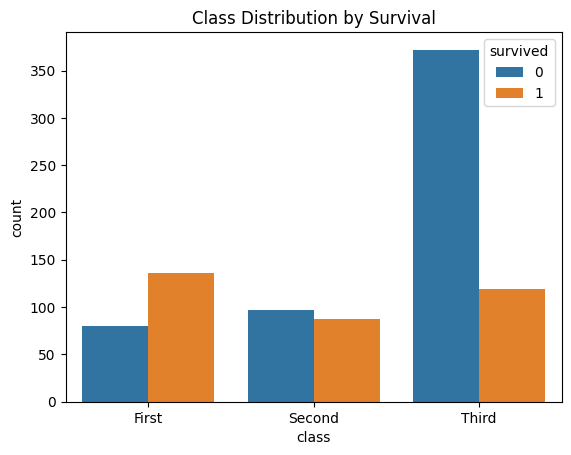
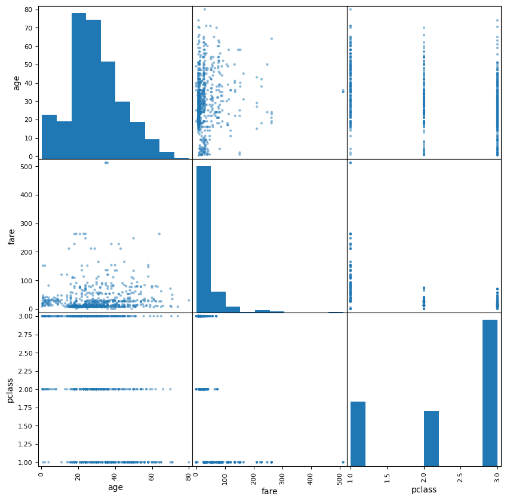
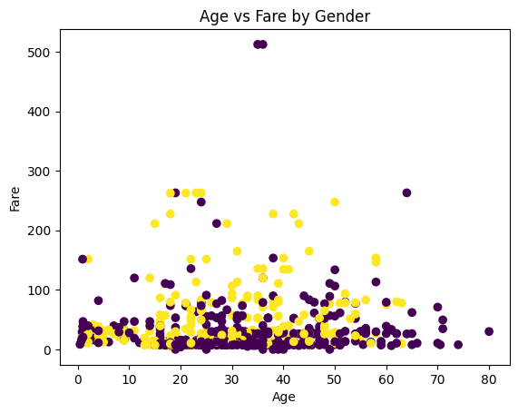
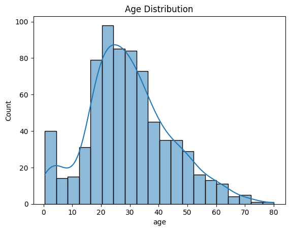

Beaderstadt Exploring and Manipulating the Titanic Dataset¶
Author: Alissa Beaderstadt
Date: October 27, 2025
Objectives: In this project, I’ll explore and prepare the Titanic dataset to better understand the factors that influenced passenger survival. My main goals are to:
-
Load and inspect the dataset using Python and Seaborn.
-
Explore patterns and visualize relationships among variables.
-
Handle missing values and clean the data for analysis.
-
Create new, meaningful features to improve insights.
-
Split the data for modeling and compare different splitting methods.
Introduction¶
The Titanic dataset is one of the most well known examples in data analytics. It includes details about passengers such as age, class, fare, and whether or not they survived the shipwreck.
In this notebook, I’ll walk through the full data preparation process from loading and cleaning the dataset to creating new features and exploring relationships between variables. The goal is to uncover patterns that might help explain survival rates and get the data ready for potential machine learning models.
Imports¶
Import the necessary Python libraries for this notebook.
import seaborn as sns
import pandas as pd
import matplotlib.pyplot as plt
import numpy as np
from pandas.plotting import scatter_matrix
from sklearn.model_selection import train_test_split
from sklearn.model_selection import StratifiedShuffleSplit
Section 1. Import and Inspect the Data¶
1.1 Load the Titanic Dataset¶
The Titanic dataset is built into Seaborn, so we can easily load it without needing to import an external file.
# Load Titanic dataset
titanic = sns.load_dataset('titanic')
# Display just the first 10 rows
print(titanic.head(10))
survived pclass sex age sibsp parch fare embarked class \
0 0 3 male 22.0 1 0 7.2500 S Third
1 1 1 female 38.0 1 0 71.2833 C First
2 1 3 female 26.0 0 0 7.9250 S Third
3 1 1 female 35.0 1 0 53.1000 S First
4 0 3 male 35.0 0 0 8.0500 S Third
5 0 3 male NaN 0 0 8.4583 Q Third
6 0 1 male 54.0 0 0 51.8625 S First
7 0 3 male 2.0 3 1 21.0750 S Third
8 1 3 female 27.0 0 2 11.1333 S Third
9 1 2 female 14.0 1 0 30.0708 C Second
who adult_male deck embark_town alive alone
0 man True NaN Southampton no False
1 woman False C Cherbourg yes False
2 woman False NaN Southampton yes True
3 woman False C Southampton yes False
4 man True NaN Southampton no True
5 man True NaN Queenstown no True
6 man True E Southampton no True
7 child False NaN Southampton no False
8 woman False NaN Southampton yes False
9 child False NaN Cherbourg yes False
1.2 Check for missing values and display summary statistics¶
Now let’s check the data types, missing values, and basic descriptive statistics.
# Check data types and missing values
titanic.info()
# See summary statistics
print(titanic.describe())
# Identify missing values in each column
titanic.isnull().sum()
# Check for correlations among numeric features
print(titanic.corr(numeric_only=True))
<class 'pandas.core.frame.DataFrame'>
RangeIndex: 891 entries, 0 to 890
Data columns (total 15 columns):
# Column Non-Null Count Dtype
--- ------ -------------- -----
0 survived 891 non-null int64
1 pclass 891 non-null int64
2 sex 891 non-null object
3 age 714 non-null float64
4 sibsp 891 non-null int64
5 parch 891 non-null int64
6 fare 891 non-null float64
7 embarked 889 non-null object
8 class 891 non-null category
9 who 891 non-null object
10 adult_male 891 non-null bool
11 deck 203 non-null category
12 embark_town 889 non-null object
13 alive 891 non-null object
14 alone 891 non-null bool
dtypes: bool(2), category(2), float64(2), int64(4), object(5)
memory usage: 80.7+ KB
survived pclass age sibsp parch fare
count 891.000000 891.000000 714.000000 891.000000 891.000000 891.000000
mean 0.383838 2.308642 29.699118 0.523008 0.381594 32.204208
std 0.486592 0.836071 14.526497 1.102743 0.806057 49.693429
min 0.000000 1.000000 0.420000 0.000000 0.000000 0.000000
25% 0.000000 2.000000 20.125000 0.000000 0.000000 7.910400
50% 0.000000 3.000000 28.000000 0.000000 0.000000 14.454200
75% 1.000000 3.000000 38.000000 1.000000 0.000000 31.000000
max 1.000000 3.000000 80.000000 8.000000 6.000000 512.329200
survived pclass age sibsp parch fare \
survived 1.000000 -0.338481 -0.077221 -0.035322 0.081629 0.257307
pclass -0.338481 1.000000 -0.369226 0.083081 0.018443 -0.549500
age -0.077221 -0.369226 1.000000 -0.308247 -0.189119 0.096067
sibsp -0.035322 0.083081 -0.308247 1.000000 0.414838 0.159651
parch 0.081629 0.018443 -0.189119 0.414838 1.000000 0.216225
fare 0.257307 -0.549500 0.096067 0.159651 0.216225 1.000000
adult_male -0.557080 0.094035 0.280328 -0.253586 -0.349943 -0.182024
alone -0.203367 0.135207 0.198270 -0.584471 -0.583398 -0.271832
adult_male alone
survived -0.557080 -0.203367
pclass 0.094035 0.135207
age 0.280328 0.198270
sibsp -0.253586 -0.584471
parch -0.349943 -0.583398
fare -0.182024 -0.271832
adult_male 1.000000 0.404744
alone 0.404744 1.000000
Analysis:
1) Data instances: There are 891 total data instances in the dataset.
2) Features: There are 15 columns (features) that describe each passenger.
3) The feature names are: survived, pclass, sex, age, sibsp, parch, fare, embarked, class, who, adult_male, decke, embark_town, alive, and alone.
4) Missing values:
1) age(177 missing)
2) embarked(2 missing)
3) deck(2 missing)
4) embark_town(most missing)
5) Data types: The dataset includes a mix of numeric, boolean, categorical, and object data types.
6) The data instances don't seem to be sorted on any of the attributes.
7) The units of age are in years (e.g., 22.0 years old).
8) Minimum, median, and maximum age:
1) Min: ~0.42 years
2) Median: ~28 years
3) Max: ~80 years
9) Highest correlation: adult_male and alone have one of the strongest positive correlations (~0.40).
10) Useful categorical features for prediction:
1) sex(survival pattern difference)
2) pclass(socioeconomic status)
3) embarked and embark_town(possible geographic influence)
Section 2. Data Exploration and Preparation¶
2.1 Explore Data Patterns and Distributions¶
We’ll start exploring relationships in the Titanic dataset to get a better sense of which features might predict survival.
- Count Plot: Class Distribution by Survival
This plot shows how survival rates differ across passenger classes.
sns.countplot(x='class', hue='survived', data=titanic)
plt.title('Class Distribution by Survival')
plt.show()

Passengers in First Class had noticeably higher survival rates, while Third Class passengers had the lowest. This suggests that socioeconomic status played a major role in survival odds.
- Scatter Matrix
A scatter matrix helps visualize relationships among multiple numeric features.
attributes = ['age', 'fare', 'pclass']
scatter_matrix(titanic[attributes], figsize=(10, 10))
array([[<Axes: xlabel='age', ylabel='age'>,
<Axes: xlabel='fare', ylabel='age'>,
<Axes: xlabel='pclass', ylabel='age'>],
[<Axes: xlabel='age', ylabel='fare'>,
<Axes: xlabel='fare', ylabel='fare'>,
<Axes: xlabel='pclass', ylabel='fare'>],
[<Axes: xlabel='age', ylabel='pclass'>,
<Axes: xlabel='fare', ylabel='pclass'>,
<Axes: xlabel='pclass', ylabel='pclass'>]], dtype=object)

From this visualization, we can see a positive relationship between fare and class (higher-class passengers paid more). Age appears to be spread fairly evenly, with no strong correlation to fare or class.
- Scatter Plot: Age vs. Fare by Gender
Now we look at how fare and age interact, by gender.
plt.scatter(titanic['age'], titanic['fare'], c=titanic['sex'].apply(lambda x: 0 if x == 'male' else 1))
plt.xlabel('Age')
plt.ylabel('Fare')
plt.title('Age vs Fare by Gender')
plt.show()

Note: In the plot above, purple = male and yellow = female
Females tend to cluster around higher fares, which might connect back to higher survival rates in women and children, especially among higher class passengers.
- Histogram: Age Distribution
Finally, let’s check the distribution of passenger ages.
sns.histplot(titanic['age'], kde=True)
plt.title('Age Distribution')
plt.show()

Most passengers were between 20 and 40 years old, with a smaller number of children and elderly passengers. There’s a slight right skew, meaning more younger passengers than older ones.
Analysis:
1) Patterns or anomalies: 1) First class passengers had the highest survival rates. 2) Fare values vary widely, with a few extreme outliers for high priced tickets. 3) There’s a gap in some age groups due to missing data. 2) Potential predictors: 1) Sex, class (pclass), and fare all show clear patterns tied to survival, these seem to be strong predictors. 3) Class imbalance: There are more non-survivors (0) than survivors (1), showing a class imbalance.
2.2 Handle Missing Values and Clean Data¶
Note:- Age was missing values. We can impute missing values for age using the median.
- embark_town was also missing values, and filling with the most common value (mode) is simple and works well.
# Impute missing 'age' values
titanic['age'] = titanic['age'].fillna(titanic['age'].median())
# Fill missing 'embark_town' values with the mode
titanic['embark_town'] = titanic['embark_town'].fillna(titanic['embark_town'].mode()[0])
2.3 Feature Engineering¶
We create new features like family size and traveling alone, and convert categorical data to numeric to help the model learn patterns.
#Create a new feature: Family size
titanic['family_size'] = titanic['sibsp'] + titanic['parch'] + 1
# Convert categorical data to numeric:
titanic['sex'] = titanic['sex'].map({'male': 0, 'female': 1})
titanic['embarked'] = titanic['embarked'].map({'C': 0, 'Q': 1, 'S': 2})
#Create a binary feature for 'alone':
titanic['alone'] = titanic['alone'].astype(int)
Analysis:
1) Family size could affect survival. Passengers traveling with larger families might have been more or less likely to survive depending on whether families stayed together or helped each other. 2) Converting categorical data to numeric is best for most machine learning models, which require numeric input.
Section 3. Feature Selection and Justification¶
3.1 Choose features and target
¶
Input features: age, fare, pclass, sex, family_size
Target variable: survived
Reasoning: - age and fare might affect survival chances (children and wealthier passengers may have survived more).
-
pclass indicates socio-economic status, which historically influenced survival.
-
sex is highly predictive, women had higher survival rates.
-
family_size could affect survival if families stayed together or helped each other.
Target: survived is categorical (0 = did not survive, 1 = survived), perfect for classification.
3.2 Define X and y¶
# Assign input features to X
X = titanic[['age', 'fare', 'pclass', 'sex', 'family_size']]
# Assign target variable to y
y = titanic['survived']
Analysis:
1) These features were chosen because they are likely to influence survival based on historical patterns. 2) sex and pclass are likely to be highly predictive, followed by age and family_size.
Section 4. Splitting¶
- Split the data into training and test sets using train_test_split first and StratifiedShuffleSplit second. Then compare.
# Basic Train/Test split
X_train, X_test, y_train, y_test = train_test_split(
X, y, test_size=0.2, random_state=123
)
print('Basic Train size:', len(X_train))
print('Basic Test size:', len(X_test))
Basic Train size: 712
Basic Test size: 179
# StratifiedShuffleSplit used to keep the class distribution
splitter = StratifiedShuffleSplit(n_splits=1, test_size=0.2, random_state=123)
for train_indices, test_indices in splitter.split(X, y):
train_set = X.iloc[train_indices]
test_set = X.iloc[test_indices]
y_train_strat = y.iloc[train_indices]
y_test_strat = y.iloc[test_indices]
print('Stratified Train size:', len(train_set))
print('Stratified Test size:', len(test_set))
Stratified Train size: 712
Stratified Test size: 179
- Compare Results
# Original class distribution
print("Original Class Distribution:\n", y.value_counts(normalize=True))
# Basic split distributions
print("Basic Split - Training Set Distribution:\n", y_train.value_counts(normalize=True))
print("Basic Split - Test Set Distribution:\n", y_test.value_counts(normalize=True))
# Stratified split distributions
print("Stratified Split - Training Set Distribution:\n", y_train_strat.value_counts(normalize=True))
print("Stratified Split - Test Set Distribution:\n", y_test_strat.value_counts(normalize=True))
Original Class Distribution:
survived
0 0.616162
1 0.383838
Name: proportion, dtype: float64
Basic Split - Training Set Distribution:
survived
0 0.610955
1 0.389045
Name: proportion, dtype: float64
Basic Split - Test Set Distribution:
survived
0 0.636872
1 0.363128
Name: proportion, dtype: float64
Stratified Split - Training Set Distribution:
survived
0 0.616573
1 0.383427
Name: proportion, dtype: float64
Stratified Split - Test Set Distribution:
survived
0 0.614525
1 0.385475
Name: proportion, dtype: float64
Analysis:
1) Stratification improves model performance because it ensures that the proportion of each class in the target variable (survived) is preserved in both the training and test sets. This prevents the model from being trained on a set with an imbalanced class distribution, which helps improve the reliability and generalization of the model’s predictions.
2) Original Class Distribution: 0.616 non-survivors, 0.384 survivors
1) Basic Split Test Set: 0.637 non-survivors, 0.363 survivors
2) Stratified Split Test Set: 0.615 non-survivors, 0.385 survivors
3) So, the stratified split produced better class balance. Both the training and test sets had class proportions nearly identical to the original dataset, making it the preferred method for classification problems with imbalanced target classes.